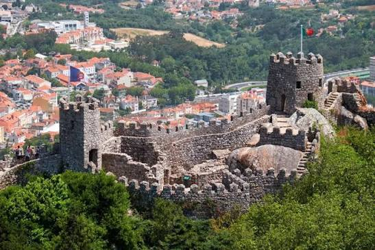
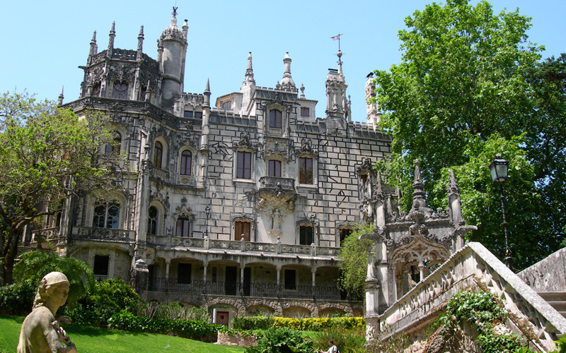
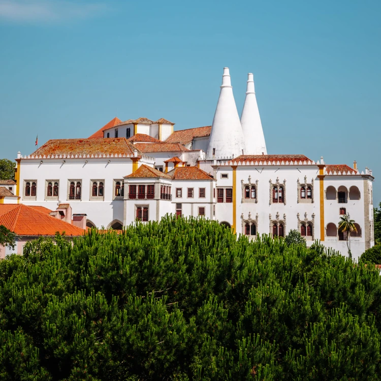
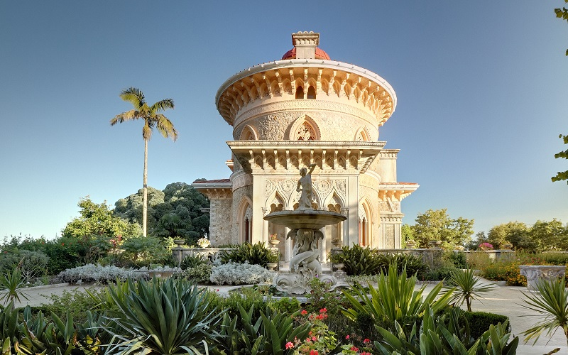
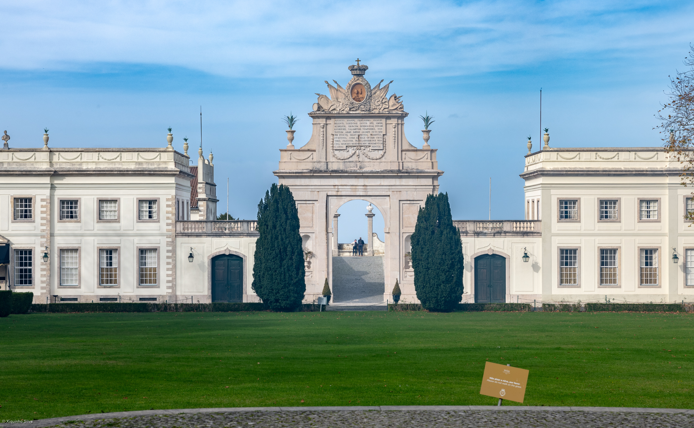
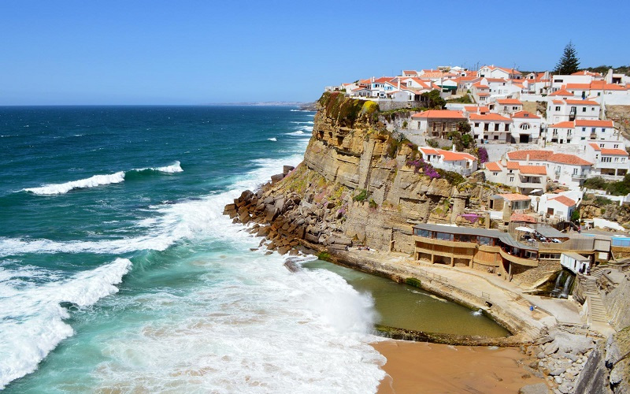
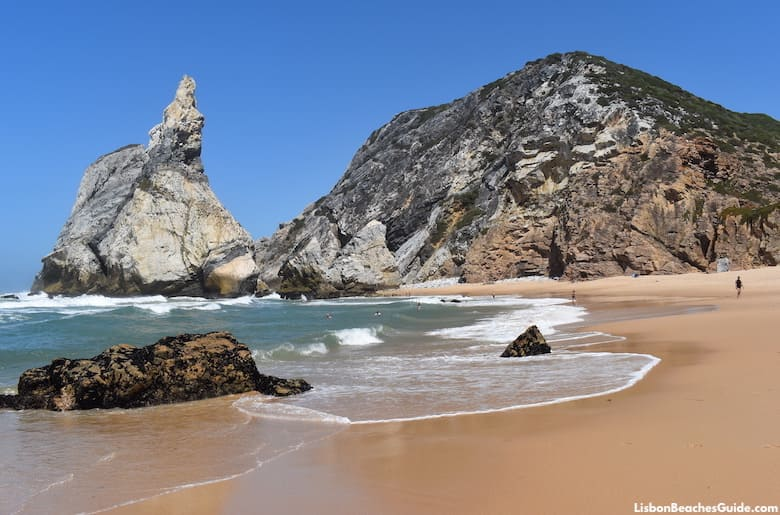

Multimédia
Nesta página junto fotografias, vídeos e um poema sobre Sintra: Fotografias | Vídeo | Poesia
Fotografias







Sintra, onde a névoa guarda os sonhos.
Vídeo
Poesia
Névoa que abraça a serra ao amanhecer,
torres de conto guardando o poder.
Jardins em segredo, fontes a cantar,
Sintra é sonho que ninguém quer acordar.
Pedra mourisca, palácio real,
história e magia em cada portal.